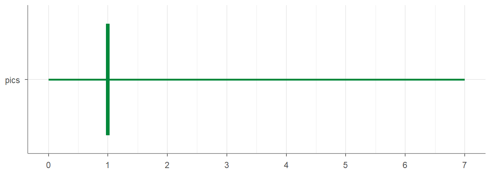
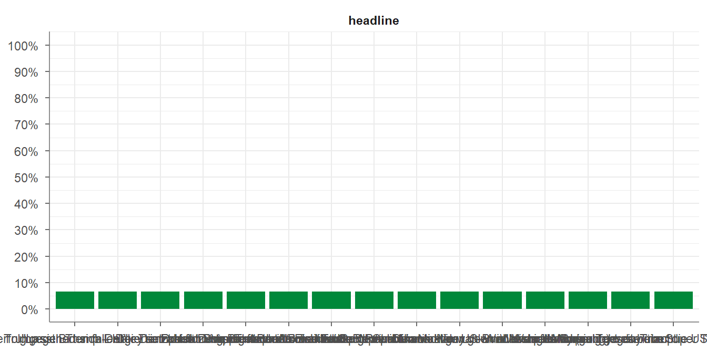
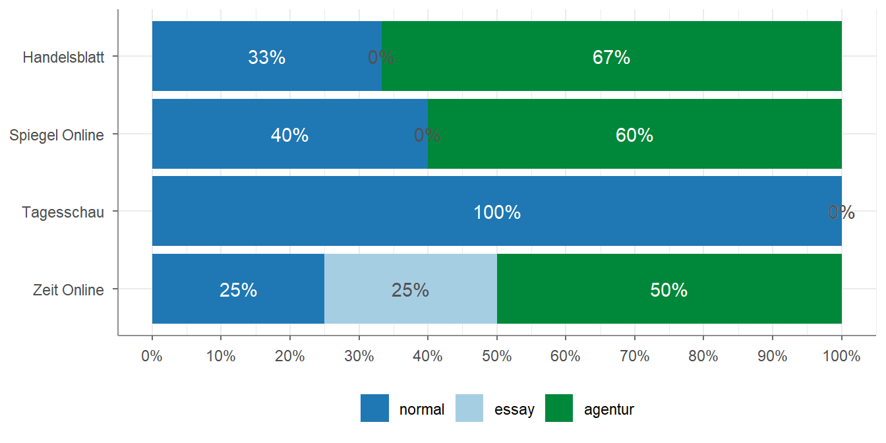
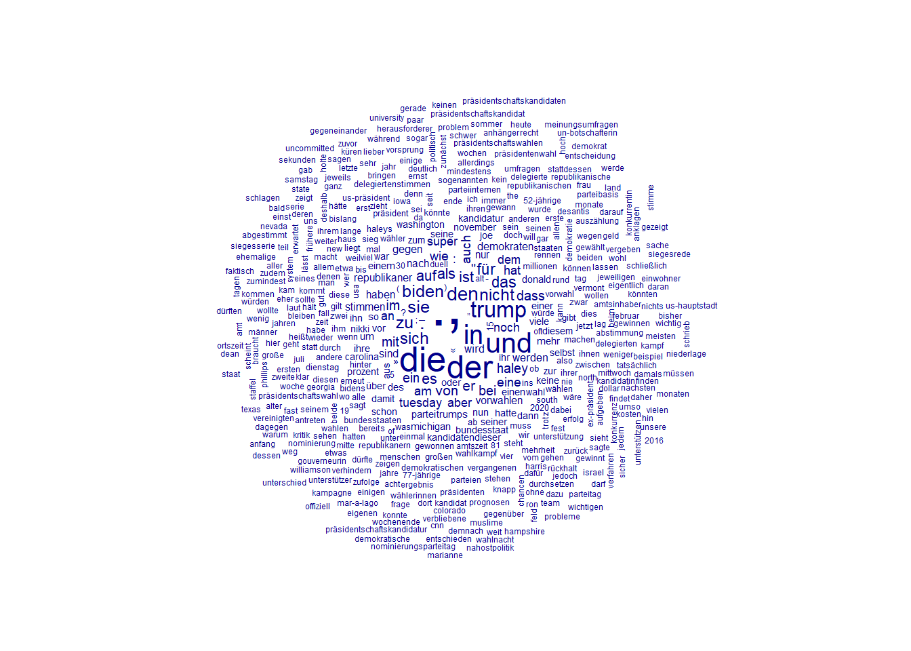
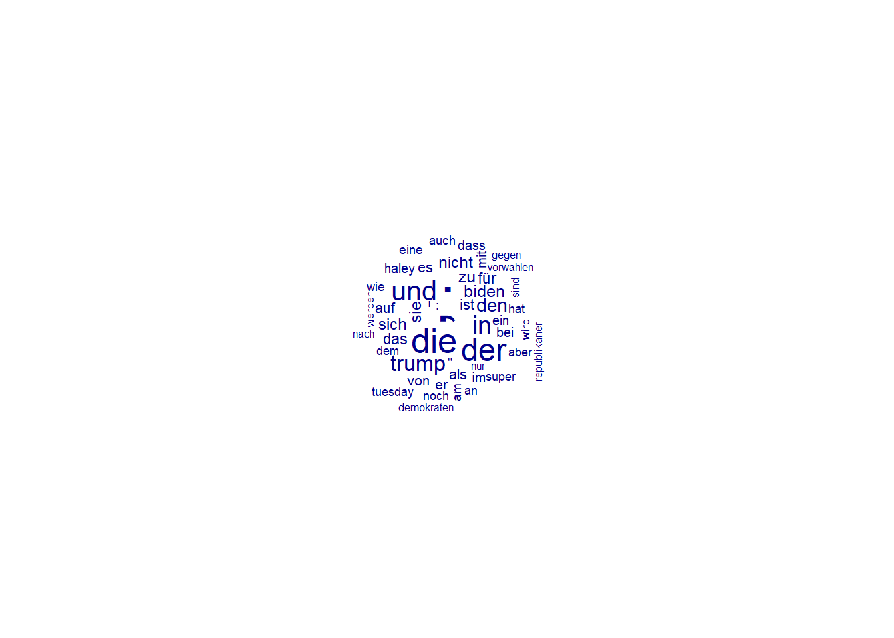
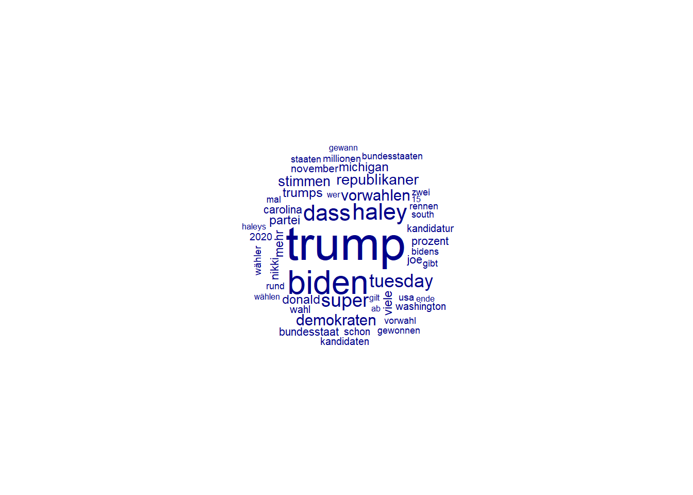

Dieses Tutorial dient als Dokumentation und Erweiterung zu dem, was in den Sitzungen in Bezug auf R erläutert wurde. Es soll dazu dienen, dass Sie die Inhalte nochmal in eigener Geschwindigkeit nacharbeiten können, zum Beispiel wenn es Ihnen in der Sitzung zu schnell ging.
Am wichtigsten beim Programmieren-lernen und auch in der alltäglichen Anwendung ist, dass Sie es einfach mal ausprobieren und ein wenig experimentieren - Sie können nichts kaputt machen*. Bitte nutzen Sie die hier angegeben Infos dann auch nur als Ausgangspunkt und informieren Sie sich darüber hinaus gerne selbst. Eine riesige Stärke von R ist, dass es eine sehr grosse Community von Nutzerinnen und Nutzern gibt und Sie online zu allem und in allerlei Form Hilfe finden (Tutorials, Videos, etc.). Auch ChatGPT kann eine sehr grosse Hilfe sein. Wenn Sie allerdings alles einfach von einer KI lösen lassen, haben Sie selbst nichts gelernt. Kurzfristig möglicherweise attraktiv, mittel- und langfristig ein Schuss ins eigene Bein. Entscheiden Sie gerne selbst, welche Informationen Ihnen persönlich am meisten helfen.
*Ihre Rohdaten sollten Sie trotzdem immer nochmal an einem zweiten Ort gespeichert haben. Und wenn Sie blind Code einer KI ausführen, können in seltenen Fällen doch auch schlimmere Dinge passieren.
TipCode direkt im Browser ausführen
Die meisten Codeblöcke auf dieser Seite sind interaktiv: R läuft direkt in Ihrem Browser, ohne dass Sie etwas installieren müssen. Sie können den Code in den Blöcken verändern und mit Run Code erneut ausführen. Mit Start Over setzen Sie einen Block auf den ursprünglichen Code zurück.
Ein paar Dinge sind dabei gut zu wissen:
- Beim ersten Öffnen der Seite lädt R im Hintergrund. Das kann einige Sekunden dauern, bis alle Ergebnisse erscheinen.
- Die Blöcke bauen aufeinander auf, genau wie die Zeilen in einem R-Script. Wenn Sie z.B. den Datensatz
datain einem Block verändern, wirkt sich das auch auf alle anderen Blöcke aus. Wenn etwas durcheinander geraten ist, laden Sie die Seite einfach neu. - Ihre Änderungen werden nicht gespeichert. Für Ihre eigenen Analysen arbeiten Sie bitte wie unten beschrieben in RStudio.
- Einige Abschnitte laufen nicht im Browser, weil die nötigen Pakete dort nicht verfügbar sind. Das betrifft die Auswertungen und Grafiken mit
tidycommsowie die Wortwolken. Diese Blöcke sind normal dargestellt, die Ergebnisse sehen Sie direkt darunter. Es macht aber allgemein Sinn, wenn Sie beispiele selbst bei sich in RStudio ausführen.
Auffrischung und Grundlagen R
25. November 2026
In dieser Sitzung werden in aller Kürze zunächst nochmal die Grundlagen von R erläutert. Das umfasst drei zentrale Elemente:
1) Sie haben R und RStudio heruntergeladen und installiert
2) Sie haben zentrale Elemente der Benutzeroberfläche kennengelernt
3) Sie haben den Beispieldatensatz eingelesen und können einfache Befehle ausführen
R und RStudio installieren
R bezeichnet eine Programmiersprache, die im Hintergrund auf Ihrem Computer eingebunden wird. RStudio ist die Benutzeroberfläche, mit der Sie R bedienen, also Daten einlesen und bearbeiten, statistische Analysen durchführen, Grafiken erstellen und vieles mehr. Sowohl R als auch RStudio sind kostenlos. Für eine erfolgreiche Installation sind vier Schritte in der genannten Reihenfolge notwendig.
a) Download von R
- Download R für Windows
- Download R für Mac mit Silicon Prozessor (M1-M5)
- Download R für Mac mit Intel Prozessor
Welchen Prozessor hat mein Mac?
b) Installation von R auf Ihrem Gerät.
c) Download von RStudio
d) Installation von RStudio
Sie werden in der Folge nur mit RStudio arbeiten. Die Installation von R war wichtig, da RStudio - welches als Benutzeroberfläche dient - im Hintergrund auf R zugreift.
Zentrale Elemente der Benutzeroberfläche von RStudio kennenlernen
Die wichtigsten Elemente habe ich kurz in der Sitzung vorgestellt; Sie kennen diese natürlich auch aus Statistik und Datenanalyse aus dem 2. Semester. Zur Wiederholung ist dieses Video-Tutorial hilfreich.
Beispieldatensatz einlesen
Um Ihre Analysen gemäss Ihrer Forschungsfrage durchführen zu können, müssen Sie die bereitgestellten Daten auswerten (in dem Fall Texte aus Online-Nachrichtenseiten). Hierfür existieren Statistikprogramme wie R. Um das zu machen, müssen wir die Daten als erstes jedoch erst einmal in RStudio einlesen.
Für das Tutorial habe ich einen Beispieldatensatz erstellt, anhand dessen Sie die relevanten Schritte üben können. Sie können aber auch direkt Ihre eigenen Daten einlesen.
Den Beispieldatensatz können Sie hier herunterladen.
Als nächstes öffnen Sie RStudio und erstellen ein neues Script in RStudio (File -> New File -> R Script). Als erstes sollten Sie in dem neu geöffneten Script nun eine Überschrift einfügen, damit Sie wissen, um was es sich handelt. Es gibt zwei Arten, Eingaben in R zu machen. Normale Eingaben interpretiert R immer als Rechenoperationen oder Befehle, die Sie über Strg+Enter / Ctrl+Enter ausführen können (oder rechts oben im Editor-Fenster bei “Run”). Beispielsweise versteht R hier direkt, dass es sich um eine Rechnung handelt, und wenn Sie die Teile markieren und Strg+Enter oder “Run” drücken, gibt RStudio in der Console unten links das entsprechende Ergebnis aus:
Probieren Sie es direkt hier aus: Ändern Sie die Rechnung im Block oben und klicken Sie auf Run Code.
Wenn wir normalen Text eingeben (z.B. wie in Word), kommt es zu Fehlern, da dies keine eindeutigen Rechenoperationen oder Befehle für R sind und das Programm nicht erkennt, was es tun soll:
Um daher “normalen” Text in R einzugeben, müssen Sie dem Programm mitteilen, dass der Text nicht als Befehl gedacht ist. Das funktioniert, indem Sie vor den entsprechenden Text ein Hashtag setzen (#).
Diese Funktion ist sehr wichtig, um Notizen an sich selbst oder andere Leserinnen im R-Code zu hinterlassen. Sie sollten Kommentare fleissig nutzen, damit Sie oder andere in der Gruppe später noch nachvollziehen können, was Sie gemacht haben. Sie werden in der Folge sehen, wie man so etwas einsetzt. Zunächst aber zur Überschrift zurück:
# Einlesen von BeispieldatensatzSpeichern Sie diese Datei nun am besten direkt und wählen Sie dafür einen Speicherort und Namen für diese Datei aus (File -> Save as…) - das ist ganz ähnlich wie bei Word oder Excel. Für einen guten Überblick macht es ausserdem Sinn, sich eine gute Dateistruktur/-organisation zu überlegen. RStudio speichert seine Scripte mit der Dateiendung “.R”. Hieran erkennen Sie im Explorer/Finder, dass es sich um ein Script für R-Code handelt, das entsprechend mit RStudio ausgeführt werden kann (äquivalent zu einem .docx-File bei Word).
Nun lesen Sie den Beispieldatensatz in R ein. Das kann R aber nicht einfach so, sondern es benötigt ein Paket mit besonderen Befehlen, damit R weiss, wie es Excel-Dateien korrekt in R einzulesen hat. Das benötigte Paket installieren und aktivieren Sie mit folgendem Code, den Sie einfach ein, zwei Zeilen unter Ihrer Überschrift in das R-Script einfügen. Beachten Sie auch, wie in diesem Beispiel Kommentare genutzt werden. Sie können Kommentare in eine neue Zeile, aber auch direkt hinter einen Befehl schreiben. Sobald ein # kommt, ignoriert R den dahinterstehenden Text.
install.packages("readxl") # Paket zum Einlesen von Excel Dateien installieren
library(readxl) # Paket aktivierenEin Befehl funktioniert immer gleich. Der Befehl wird über den Namen aufgerufen. Oben sind es zwei Befehle. Einmal install.packages und einmal library. Danach folgt eine offene Klammer und in der Klammer wird geschrieben, auf was sich der Befehl beziehen soll. In beiden Fällen soll der Befehl auf das Paket readxl angewandt werden. Der erste Befehl sagt, dass das Paket installiert werden soll, der zweite Befehl, dass es aktiviert werden soll (bzw. der aktiven Bibliothek hinzugefügt wird). Eine geschlossene Klammer beendet den Befehl.
Die Installation sollte in dem Fall nur wenige Sekunden dauern und ein paar Warnungen in der Console ausgeben (das Fenster links unten). Sofern es keine Errors sind, können die Warnungen an dieser Stelle ignoriert werden.
Nun können Sie die Beispieldaten einlesen. Dafür müssen Sie die Exceldatei geschlossen haben und den Dateipfad zu der Exceldatei (also wo Sie data_example.xlsx gespeichert haben) kopieren. Ersetzen Sie dann den untenstehenden fiktiven Dateipfad mit dem korrekten Dateipfad auf Ihrem Gerät. Bitte beachten Sie, dass Sie zum Einlesen Slashes ( / ) benötigen. (Sollte es unter Windows nicht funktionieren, ersetzen Sie den Slash mit zwei Backslashes ( \\ )).
data <- read_excel("C:/Users/Name/Documents/Studium/WS26/HypeHorror/data/data_example.xlsx")Sie haben die Daten nun eingelesen und der Datentabelle den Namen data zugeordnet. Unter diesem Namen kann die Datentabelle wieder aufgerufen werden. Rechts oben in RStudio unter “Environment” sehen Sie nun auch data aufgelistet. Per Doppelklick auf data im Environment können Sie die Tabelle ansehen - ähnlich wie bei Excel. Sie können allerdings auf diese Art keine Änderungen an den Einträgen vornehmen.
(Hier im Browser ist der Datensatz bereits für Sie eingelesen, Sie können also direkt mit den folgenden Blöcken arbeiten.)
Zwischenstand
Insgesamt sollten Sie nun folgenden Code in Ihrem R-Script haben. Dazu rechts im Environment der eingelesene Datensatz.
# Einlesen von Beispieldatensatz
install.packages("readxl") # Paket zum Einlesen von Excel Dateien installieren
library(readxl) # Paket aktivieren
data <- read_excel("C:/Users/Name/Documents/Studium/WS26/HypeHorror/data/data_example.xlsx") # Einlesen der DatenTipp: Wenn man das erste Mal install.packages("") ausgeführt hat, kann man diesen Befehl auskommentieren (ein # an den Zeilenanfang), da dieses Paket nun auf dem Gerät installiert ist und man dies in Zukunft nicht mehr neu installieren muss und somit etwas Zeit spart. Es reicht dann, das benötigte Paket über den Befehl library() aufzurufen. (Es gibt noch eine elegantere Möglichkeit mit require(). Wen das interessiert, kann ja mal recherchieren).
Sie können nun auch bereits mit den Daten spielen. Zum Beispiel können Sie per names(data) die Namen der Spalten des Datensatzes ausgeben lassen. Oder per count(data, outlet) zählen, wie viele Artikel von welchem Outlet stammen (count() stammt aus dem Paket dplyr, das Sie aus dem 2. Semester kennen und mit library(dplyr) aktivieren).
Es macht immer Sinn, sich eingelesene Daten erst einmal im Überblick anzuschauen, da man hierdurch Fehler entdecken und die Struktur der Daten verstehen kann. Einen solchen ersten Überblick bekommt man z.B. mit head(data). Beantworten Sie an der Stelle vier Fragen. Hierzu müssen Sie auch auf bestehendes Wissen zurück greifen und Sie können oben das Codefeld nehmen um Code auszuführen oder (empfohlen und einfacher) Sie versuchen es lokal in R auf Ihrem Computer:
Wie viele Spalten und Zeilen umfasst der Datensatz
Wie heissen die Spalten im Datensatz
Welche Art von Daten sind in den jeweiligen Spalten enthalten
Welche Spalten sind vermutlich “Rohdaten” und welche “erzeugte” Daten
Wichtig Sich einen Überblick zu verschaffen steht immer an erster Stelle, wenn man Daten eingelesen hat.
Daten filtern
25. November 2026
Wie im Seminar besprochen, ist der Datensatz, den Sie bekommen, noch nicht perfekt vorbereitet, um Ihre Analysen durchführen zu können. Er umfasst über 60.000 Texte zu allerlei Themen und Aspekten, die mit künstlicher Intelligenz zusammenhängen. Das ist noch sehr unspezifisch. Sie müssen diese rohen Daten daher erst filtern, um die für Sie interessanten Daten von den uninteressanten zu trennen. Irrelevante Daten verfälschen Ihre Ergebnisse, wodurch Ihre Analyse wertlos wäre. Einfaches Beispiel: Wenn Sie wissen wollen, wie viel die Äpfel wiegen, die Sie auf einer Streuobstwiese geerntet haben, dann müssen Sie zunächst auch erst die Äpfel von anderem Erntegut wie Pflaumen oder Birnen trennen, bevor Sie wiegen. Eine ähnlich simple Logik gilt hier.
Dieser Schritt ist sehr relevant und Sie müssen sorgfältig vorgehen. Sie wollen alle Daten behalten, die für Sie relevant sind, aber alles ausschliessen, was keine Relevanz hat. Dazwischen gibt es oft einen Graubereich, der schwer zu entscheiden ist.
In diesem Kapitel filtern wir zunächst nach formalen Merkmalen, also nach Spalten wie Medium, Datum oder Anzahl der Bilder. Im nächsten Kapitel suchen wir dann in den Texten selbst.
Für das Filtern verwenden wir zwei Pakete aus dem sogenannten tidyverse. Das ist eine Sammlung von R-Paketen, die alle einer ähnlichen, gut lesbaren Logik folgen. Auch das kennen Sie bereits aus dem 2. Semester und diese Logik verwenden wir auch für die weiteren Kapitel: dplyr für die Arbeit mit Tabellen (z.B. Filtern) und stringr für die Arbeit mit Text. Installieren und aktivieren Sie beide Pakete wie gewohnt:
install.packages(c("dplyr", "stringr")) # nur beim ersten Mal nötig
library(dplyr)
library(stringr)Hier im Browser sind beide Pakete bereits geladen.
Einzelne Spalten ansprechen
Wie in den meisten Tabellen sind die einzelnen Beobachtungen (bei uns: Artikel) in Zeilen und die Spalten bilden die verschiedenen Variablen. Wenn Sie sich den Datensatz data anschauen, sehen Sie, dass es hier z.B. die Variablen “nr”, “link”, “outlet”, “date”, usw. gibt. Wir wollen uns nun als erstes den Inhalt der Spalte “pics” anschauen. Versuchen wir es mit der zunächst intuitiven Lösung, nämlich dem Spaltennamen:
Das erzeugt einen Fehler, weil R das Objekt nicht kennt (beachten Sie, es ist rechts oben im Environment selbst nicht aufgeführt). Da die Spalte “pics” Teil des grösseren Objekts data ist, müssen wir R auch mitteilen, dass “pics” in der Tabelle data zu finden ist. Das funktioniert mittels $, genauer mittels data$pics. Auf die Art wird R mitgeteilt, dass es im Objekt data schauen soll und dort die Spalte “pics” findet. Wir können das direkt testen:
Sie sehen als Output den Inhalt der Spalte “pics” (ab und zu zu prüfen, ob die Werte mit der Tabelle data übereinstimmen, ist immer sinnvoll. Damit wird vermieden, dass sich hier und da Fehler einschleichen, die man bei grösseren Datensätzen schnell übersehen kann). Auf die Art können wir den Inhalt aller Spalten aufrufen:
Spalten auswählen
Wenn Sie nicht nur eine, sondern mehrere Spalten auswählen wollen, verwenden Sie den Befehl select(). In die Klammer schreiben Sie zuerst den Datensatz und danach die Spalten, die Sie behalten wollen:
Mit einem Minus vor dem Spaltennamen geht es auch umgekehrt: Dann werden alle Spalten behalten ausser den genannten. Das nutzen wir direkt für einen praktischen Zwischenschritt. Die Spalten “link”, “lead” und “text” enthalten sehr lange Einträge, die jede Ausgabe unübersichtlich machen. Für die folgenden Schritte, in denen wir die Texte selbst nicht brauchen, legen wir daher eine schlanke Version des Datensatzes ohne diese drei Spalten an und nennen sie data_kurz. Der ursprüngliche Datensatz data bleibt dabei unverändert erhalten, auf ihn greifen wir zurück, sobald wir im nächsten Kapitel mit den Texten arbeiten.
Sie sehen, dass R die Tabelle übersichtlich darstellt. Oben steht, wie viele Zeilen und Spalten die Tabelle hat (hier 15 × 10), und unter jedem Spaltennamen steht, welche Art von Daten die Spalte enthält: <dbl> für Zahlen, <chr> für Text und <dttm> für Datum und Uhrzeit. Spalten, die nicht mehr in die Breite passen, werden darunter aufgelistet.
Zeilen filtern
Der zentrale Befehl zum Filtern von Zeilen heisst filter(). In die Klammer schreiben Sie zuerst den Datensatz und nach einem Komma die Bedingung, die eine Zeile erfüllen muss, damit sie behalten wird. Innerhalb von filter() (und auch von select()) reicht der Spaltenname, Sie müssen also nicht data_kurz$outlet schreiben, da R durch das erste Argument bereits weiss, in welchem Datensatz es suchen soll.
Das Ergebnis weisen wir wie gewohnt einem neuen Objekt zu. Mit nrow() (= number of rows) prüfen wir, wie viele Zeilen, also Artikel, übrig bleiben:
Von den 15 Artikeln im Beispieldatensatz stammen 5 von Spiegel Online. Beachten Sie das doppelte Gleichheitszeichen ==. Das hängt damit zusammen, dass ein einfaches = in R bereits vergeben ist und wie <- eine Zuweisung von Werten bedeutet. Unser herkömmliches Verständnis von “ist gleich” wird in R durch == umgesetzt. Weitere wichtige Vergleiche sind:
| Code | Bedeutung | Beispiel |
|---|---|---|
== |
ist gleich | outlet == "spon" |
!= |
ist ungleich | outlet != "spon" |
> und < |
grösser als / kleiner als | pics > 1 |
>= und <= |
grösser gleich / kleiner gleich | pics >= 2 |
%in% |
ist einer von mehreren Werten | outlet %in% c("spon", "zon") |
Mehrere Bedingungen können Sie verknüpfen: & bedeutet UND (beide Bedingungen müssen erfüllt sein), | bedeutet ODER (mindestens eine Bedingung muss erfüllt sein). Das | finden Sie auf der Windows-Tastatur mit AltGr + <, auf dem Mac mit Alt + 7.
Übung: Filtern Sie alle Artikel vom Handelsblatt ("handel") oder von Zeit Online ("zon"), die genau ein Bild enthalten. Ersetzen Sie dafür die Unterstriche durch den passenden Code und klicken Sie auf Submit Answer.
Sie brauchen zwei Bedingungen, die beide erfüllt sein müssen: eine für das Medium und eine für die Anzahl der Bilder. Für “Handelsblatt oder Zeit Online” ist %in% aus der Tabelle oben praktisch. Und denken Sie daran: “genau” heisst ==.
treffer <- filter(data_kurz, outlet %in% c("handel", "zon") & pics == 1)
trefferAlternativ mit ODER und Klammern:
treffer <- filter(data_kurz, (outlet == "handel" | outlet == "zon") & pics == 1)
trefferDiese Filter-Operationen sind für Sie wichtig, da Sie - je nach Forschungsfrage - teils nur bestimmte Nachrichtenmedien oder nur bestimmte Jahre für Ihre Forschungsfrage brauchen.
NoteFür Fortgeschrittene: Teilmengen mit eckigen Klammern (Base R)
In vielen Tutorials und in Code, den Sie online finden, werden Zeilen und Spalten nicht mit filter() und select() ausgewählt, sondern mit eckigen Klammern ([]). Das ist der Weg, den R von Haus aus mitbringt (sogenanntes Base R). Es lohnt sich, ihn lesen zu können.
In den eckigen Klammern wird auf Zeilen und Spalten verwiesen, von einem Komma getrennt: daten[zeilen, spalten]. Bleibt eine Seite leer, werden alle Zeilen bzw. alle Spalten genommen. Statt Spaltennamen können Sie auch Spaltennummern verwenden.
Bei mehreren einzelnen Zeilen oder Spalten müssen diese Werte mit dem c()-Befehl kombiniert werden. Damit wird eine Aufzählung markiert und R erkennt die Kommas richtig. Ohne c(), also z.B. data_kurz[3,4,9, "pics"], versteht R nicht, dass sich die ersten drei Werte alle noch auf die Zeilen beziehen, da alle Kommas für R gleich sind. Je nach Datenformat gibt R dann einen Fehler aus oder, noch tückischer, ein falsches Ergebnis ohne jede Warnung.
Zum Vergleich die tidyverse-Befehle, die dasselbe erledigen: slice() wählt Zeilen nach ihrer Nummer aus, select() Spalten.
Texte filtern
25. November 2026
In Texten suchen
Spannender und nach der initialen formalen Filterung für Sie relevanter wird es, wenn wir nicht nach fertigen Kategorien filtern (wie bisher), sondern im Text selbst suchen. Dafür arbeiten wir wieder mit dem vollständigen Datensatz data, der die Spalte “text” noch enthält.
Für die Suche gibt es den Befehl str_detect() aus dem Paket stringr (str steht für string, so heissen Zeichenketten bzw. Text in der Programmierung). Er prüft für jeden Text, ob ein Suchbegriff darin vorkommt, und gibt TRUE (kommt vor) oder FALSE (kommt nicht vor) zurück. In die Klammer schreiben Sie zuerst, wo gesucht werden soll, und dann, wonach gesucht werden soll:
Sie sehen 15 Werte, einen für jeden Artikel. Genau mit solchen TRUE/FALSE-Werten arbeitet filter(): Es behält alle Zeilen, bei denen TRUE herauskommt. Wir können str_detect() also einfach als Bedingung in filter() einsetzen. Um zu sehen, welche Artikel gefunden wurden, lassen wir uns anschliessend mit $ die Überschriften der Treffer anzeigen:
Fünf Artikel erwähnen Gaza (einer davon übrigens nur als Teil des Wortes “Gazastreifen”, dazu gleich mehr). Es lohnt sich, nach jedem Filterschritt kurz auf die Treffer zu schauen, z.B. auf die Überschriften. Das ist ein schneller erster Plausibilitätscheck.
Wenn Sie nur wissen wollen, wie viele Texte einen Begriff enthalten, geht das auch ohne filter(): sum() zählt die TRUE-Werte zusammen (R behandelt TRUE als 1 und FALSE als 0).
Achtung: Zeichenfolgen statt Wörter. str_detect() sucht nach Zeichenfolgen, nicht nach ganzen Wörtern. Das kann zu unerwarteten Treffern führen. Vergleichen Sie:
Die erste Suche findet 11 Texte, weil sie auch “Kandidaten”, “Kandidatin” und “Kandidatur” findet. Die zweite Suche findet nur 5 Texte, in denen das Wort “Kandidat” für sich steht. \\b markiert eine Wortgrenze (b für boundary). Für Ihre Daten ist das besonders wichtig: Eine Suche nach "KI" würde auch “Kiel”, “Kino” oder “Kinder” finden, "\\bKI\\b" dagegen nur das Wort KI. Ein Bindestrich zählt dabei als Wortgrenze, “KI-Avatare” wird also gefunden. Der Baustein \\b funktioniert damit gewissermassen umgekehrt zum Platzhalter *, den Sie vielleicht aus Suchmasken kennen: Dort wird standardmässig nach ganzen Wörtern gesucht und * hebt die Wortgrenze auf. str_detect() sucht dagegen standardmässig nach Zeichenfolgen und \\b setzt eine Wortgrenze. Das * selbst hat in R übrigens eine andere Bedeutung und sollte daher nicht als Platzhalter verwendet werden.
Achtung: Gross- und Kleinschreibung. str_detect() unterscheidet zwischen Gross- und Kleinschreibung:
Die erste Suche findet z.B. “Vorwahl” nicht, weil “wahl” dort klein geschrieben ist. Mit (?i) am Anfang des Suchbegriffs wird die Gross- und Kleinschreibung ignoriert (i für ignore case).
Die Suchsyntax: Platzhalter, Phrasen, UND, ODER, NICHT
Die Suchbegriffe, die Sie str_detect() übergeben, sind sogenannte reguläre Ausdrücke (engl. regular expressions, kurz Regex). Das ist eine Art Mini-Sprache für Suchmuster. Sie müssen davon nur wenige Bausteine kennen, um sehr präzise suchen zu können. Wenn Sie schon einmal mit einer Suchmaske gearbeitet haben, die UND, ODER oder Platzhalter (*) erlaubt, finden Sie hier die Entsprechungen in R.
Kurz vorab zu den Backslashes: Bausteine wie \b (Wortgrenze), \w (Buchstabe) oder \d (Ziffer) bestehen aus einem Backslash und einem Buchstaben. Sie schreiben in R also "\\b", gemeint ist \b. Merken Sie sich einfach: In Suchbegriffen in R immer zwei Backslashes.
Platzhalter am Wortende (z.B. Gericht* für Gericht, Gerichtshof, Gerichtsverfahren …): Da str_detect() nach Zeichenfolgen sucht, ist dieser Platzhalter automatisch eingebaut. Sie setzen einfach nur vorne eine Wortgrenze und lassen sie hinten weg:
Platzhalter am Wortanfang (z.B. *kandidatur für Präsidentschaftskandidatur, Kampfkandidatur …): Hier setzen Sie die Wortgrenze nur hinten. Beachten Sie, dass das alleinstehende Wort “Kandidatur” mit grossem K hier nicht gefunden wird. Mit (?i) vorne würde es mitgezählt, dann sind es 8 statt 5 Texte.
Phrasen (z.B. "South Carolina"): Eine feste Wortfolge schreiben Sie einfach mit Leerzeichen in den Suchbegriff.
NoteFür Fortgeschrittene: Gefundene Wörter anzeigen und Muster suchen
Welche Wörter genau gefunden wurden, können Sie sich mit str_extract_all() anzeigen lassen. Das ist sehr hilfreich, um zu prüfen, ob Ihr Platzhalter nicht auch ungewollte Wörter erfasst. \\w* steht dabei für “beliebig viele weitere Buchstaben” und unlist() macht aus dem Ergebnis eine einfache Liste:
Reguläre Ausdrücke können ausserdem Muster beschreiben (in Suchmasken oft zwischen Schrägstrichen geschrieben, z.B. /GPT-\d+/). \\d+ steht für “eine oder mehrere Ziffern”. "GPT-\\d+" findet also GPT-3, GPT-4, GPT-5 usw. In unseren Beispieldaten finden wir so alle Prozentangaben:
UND, ODER, NICHT und Klammern: Oft wollen Sie nicht nur nach einem Begriff suchen, sondern mehrere kombinieren. Dafür schreiben Sie mehrere str_detect()-Befehle in filter() und verbinden sie mit & (UND), | (ODER) und ! (NICHT), genau wie im vorherigen Kapitel bei den formalen Merkmalen. Das lässt sich direkt wie eine Suchanfrage lesen:
Die Klammern funktionieren wie in der Mathematik: Was in Klammern steht, wird zuerst ausgewertet. Die letzte Suche bedeutet also: „Israel ODER Gaza, und zusätzlich NICHT Demokratie“. Achten Sie darauf, dass jede geöffnete Klammer auch wieder geschlossen wird. Sie werden sich aus letztem Semester erinnern, dass solche kleinen Fehler sehr hartnäckig und nervig sein können.
Für einfache ODER-Suchen gibt es noch eine Abkürzung: Innerhalb eines Suchbegriffs bedeutet | ebenfalls ODER. str_detect(text, "Israel|Gaza") ergibt also dasselbe wie die ODER-Suche oben.
Sie können Textsuche und formale Merkmale aus dem vorherigen Kapitel übrigens auch beliebig kombinieren, z.B. filter(data, outlet == "spon" & str_detect(text, "Gaza")).
Übung: Finden Sie alle Artikel, in denen “Abtreibung” ODER ein Wort, das mit “Einwander” beginnt (Einwanderer, Einwanderung, …), vorkommt.
Sie können zwei str_detect()-Befehle mit | verknüpfen. Für den Platzhalter am Wortende brauchen Sie nur eine Wortgrenze am Anfang: "\\bEinwander".
treffer <- filter(data, str_detect(text, "Abtreibung") | str_detect(text, "\\bEinwander"))
treffer$headlineKürzer geht es mit | innerhalb des Suchbegriffs:
treffer <- filter(data, str_detect(text, "Abtreibung|\\bEinwander"))
treffer$headlineÜbung: Finden Sie alle Artikel, die “Kalifornien” ODER “Texas” erwähnen UND zusätzlich ein Wort, das mit “Gericht” beginnt. Denken Sie an die Klammern.
treffer <- filter(data, (str_detect(text, "Kalifornien") | str_detect(text, "Texas")) & str_detect(text, "\\bGericht"))
treffer$headline
NoteFür Fortgeschrittene: Abstandssuche (NEAR)
Manchmal möchte man nicht nur wissen, ob zwei Begriffe im selben Text vorkommen, sondern ob sie nah beieinander stehen, z.B. höchstens 10 Wörter voneinander entfernt. Auch das geht mit regulären Ausdrücken, der Suchbegriff wird allerdings deutlich unübersichtlicher:
Lesen lässt sich das so: “Trump, danach bis zu 10 beliebige Wörter ((\\w+\\W+){0,10}), danach ein Wort, das mit Gericht beginnt”, und mit | dasselbe in umgekehrter Reihenfolge. Sie müssen das nicht auswendig können. Wenn Sie so etwas brauchen, ist es völlig in Ordnung, sich den Ausdruck mit Hilfe von Google oder einer KI zu bauen. Wichtig ist nur, dass Sie das Ergebnis anschliessend prüfen, z.B. wie im Kasten oben mit str_extract_all().
Spickzettel: Von der Suchmaske zu R
Die folgende Tabelle fasst zusammen, wie Sie typische Suchanfragen in R umsetzen. Die Beispiele beziehen sich auf Ihre eigenen Daten zu KI. In der Spalte “R” steht jeweils, was Sie in str_detect(text, ...) schreiben. Bei den Verknüpfungen steht ... jeweils für einen vollständigen str_detect()-Befehl, z.B. str_detect(text, "KI").
| Suchmaske | R | Bedeutung |
|---|---|---|
KI |
"\\bKI\\b" |
ganzes Wort |
regulier* |
"\\bregulier" |
Platzhalter am Ende: reguliert, Regulierung … (mit (?i) auch Regulierung mit grossem R) |
*intelligenz |
"intelligenz\\b" |
Platzhalter am Anfang: Superintelligenz … |
"künstliche Intelligenz" |
"künstliche Intelligenz" |
genaue Wortfolge |
| Gross-/Kleinschreibung egal | "(?i)chatgpt" |
findet ChatGPT, chatGPT, CHATGPT … |
KI UND Arbeit |
... & ... |
beide Begriffe |
ChatGPT ODER Gemini |
... | ... oder "ChatGPT|Gemini" |
mindestens einer |
KI NICHT Trump |
... & !... |
ausschliessen |
(KI ODER AI) UND Job* |
(... | ...) & ... |
Klammern zum Gruppieren |
/GPT-\d+/ |
"GPT-\\d+" |
regulärer Ausdruck |
Filter prüfen und Ergebnis speichern
Kein Suchbegriff ist perfekt. Es gibt immer zwei Arten von Fehlern: Ihr Filter findet Texte, die eigentlich nicht relevant sind (z.B. findet “Gemini” auch Texte über das Sternzeichen), oder er übersieht Texte, die eigentlich relevant wären (z.B. weil dort “künstliche Intelligenz” oder “K.I.” statt “KI” steht). Gehen Sie daher am besten so vor:
- Lassen Sie sich die Anzahl der Treffer anzeigen (
nrow()) und prüfen Sie, ob die Grössenordnung plausibel ist. - Lesen Sie stichprobenartig einige Treffer, z.B. die Überschriften mit
$headline. Sind sie wirklich relevant? - Schauen Sie sich auch einige Texte an, die nicht gefunden wurden (z.B. mit
!infilter()). Ist dort etwas Relevantes dabei? - Passen Sie Ihre Suchbegriffe an und wiederholen Sie die Schritte.
Halten Sie Ihre Entscheidungen im Script mit Kommentaren fest. So können Sie und andere später nachvollziehen, warum Sie welche Texte behalten haben.
Wenn Sie mit Ihrem Filter zufrieden sind, weisen Sie das Ergebnis einem neuen Objekt zu und arbeiten in den folgenden Schritten mit diesem gefilterten Datensatz weiter.
Einfache deskriptive Statistik
25. November 2026
Nachdem wir im ersten Teil ein paar Grundlagen aufgefrischt und die Daten gefiltert haben, können wir nun bereits ein wenig in die Anwendung eintauchen.
Das Lernziel für diesen Teil der Sitzung ist, grundlegende Methoden der deskriptiven (=beschreibenden) Statistik in R und RStudio anzuwenden. Ausserdem schauen wir uns an, wie man einfache Kennzahlen für Texte berechnet, z.B. ihre Länge.
Wichtig hierbei: Wir arbeiten dafür weiter mit den bereits eingelesenen Beispieldaten bzw. der schlanken Version data_kurz, Sie können aber natürlich auch gerne andere eigene Daten einlesen und schauen, ob es auch damit klappt, das Prinzip ist dasselbe.
In einem ersten Schritt wollen wir grundlegende statistische Kennzahlen für unsere Daten ermitteln. Das ist in einem empirischen wissenschaftlichen Projekt fast immer der erste Schritt einer Analyse und dient dazu, ein grundlegendes Verständnis von den Daten zu bekommen: Was ist das Durchschnittsalter meiner Teilnehmenden, wie ist das Geschlechterverhältnis, wie sind die Bildungsabschlüsse verteilt, sind typische Fragen, die bei einer Umfrage in einem ersten Schritt angeschaut werden. In Ihrem Kontext betreffen die grundlegenden, deskriptiven Fragen allerdings keine Teilnehmerinnen aus einer Umfrage, sondern eher Ihre Texte. Von Interesse sind hier z.B. Fragen wie: Wie lang sind meine Texte durchschnittlich, wie verteilen sich die Texte auf die verschiedenen Quellen, wie viele Texte enthalten ein bestimmtes Merkmal, etc.
Dafür verwenden wir das Paket tidycomm, das Sie bereits kennen. Installieren und aktivieren Sie es wie gewohnt:
install.packages("tidycomm") # nur beim ersten Mal nötig
library(tidycomm)
Important
tidycomm läuft leider nicht im Browser. Die Codeblöcke in diesem Kapitel und im Kapitel zu Grafiken sind deshalb nicht interaktiv, die Ergebnisse sehen Sie aber jeweils direkt darunter. Bitte führen Sie den Code in RStudio aus. Interaktiv ist nur der Abschnitt “Arbeit mit Textdaten” weiter unten.
Kennzahlen für metrische Variablen
Mittelwert, Median, Standardabweichung und weitere Kennzahlen einer metrischen Variable gibt der Befehl describe() auf einen Schlag aus. In die Klammer schreiben Sie zuerst den Datensatz und dann die Variable, z.B. die Anzahl der Bilder (“pics”):
describe(data_kurz, pics)# A tibble: 1 × 15
Variable N Missing M SD Min Q25 Mdn Q75 Max Range
* <chr> <int> <int> <dbl> <dbl> <dbl> <dbl> <dbl> <dbl> <dbl> <dbl>
1 pics 15 0 1.53 1.77 0 1 1 1 7 7
# ℹ 4 more variables: CI_95_LL <dbl>, CI_95_UL <dbl>, Skewness <dbl>,
# Kurtosis <dbl>Sie sehen u.a. die Fallzahl (N), fehlende Werte (Missing), den Mittelwert (M), die Standardabweichung (SD), den Median (Mdn), Minimum und Maximum. Wir wissen nun, dass im Schnitt 1,53 Fotos pro Artikel enthalten sind. Nice. Sie können auch mehrere Variablen auf einmal beschreiben lassen, indem Sie sie mit Komma aufzählen:
describe(data_kurz, pics, other_elements)# A tibble: 2 × 15
Variable N Missing M SD Min Q25 Mdn Q75 Max Range
* <chr> <int> <int> <dbl> <dbl> <dbl> <dbl> <dbl> <dbl> <dbl> <dbl>
1 pics 15 0 1.53 1.77 0 1 1 1 7 7
2 other_elements 15 0 0.867 0.834 0 0 1 1 3 3
# ℹ 4 more variables: CI_95_LL <dbl>, CI_95_UL <dbl>, Skewness <dbl>,
# Kurtosis <dbl>Für die Spalte “article_type”, in welcher der Typ des Artikels codiert ist, ergibt das aber wenig Sinn. Das liegt daran, dass es sich um eine nominale Variable handelt, für die eine Angabe des Mittelwerts nicht sinnvoll ist (was ist der Mittelwert von “essay”, “agentur” und “normal”?). describe() passt hier für Sie auf und gibt eine Fehlermeldung aus:
describe(data_kurz, article_type)Error in `describe()`:
! ... must only contain numeric variables.Häufigkeiten
Für nominale Variablen sind stattdessen Häufigkeiten das Mittel der Wahl. Dafür gibt es den Befehl tab_frequencies():
tab_frequencies(data_kurz, article_type)# A tibble: 3 × 5
article_type n percent cum_n cum_percent
* <chr> <int> <dbl> <int> <dbl>
1 agentur 7 0.467 7 0.467
2 essay 1 0.0667 8 0.533
3 normal 7 0.467 15 1 Die Spalte n enthält die absoluten Häufigkeiten, percent die relativen Häufigkeiten (als Anteil, 0.467 entspricht also 46,7 %). Die Spalten mit cum_ davor sind die kumulierten, also aufaddierten Werte.
Kennzahlen für Gruppen
Oft ist es aber so, dass Sie nicht am Gesamtmittelwert interessiert sind, sondern zwischen Texttypen oder Quellen unterscheiden wollen. Wenn wir z.B. den Mittelwert an Bildern pro Artikel (oder ein sonstiges Merkmal, das Sie identifiziert haben, z.B. Häufigkeit bestimmter Frames) getrennt nach Medienhaus bekommen wollen, gruppieren wir die Daten zuerst mit group_by() und reichen sie dann per Pipe (%>%) an describe() weiter:
data_kurz %>% group_by(outlet) %>% describe(pics)# A tibble: 4 × 16
# Groups: outlet [4]
outlet Variable N Missing M SD Min Q25 Mdn Q75 Max Range
* <chr> <chr> <int> <int> <dbl> <dbl> <dbl> <dbl> <dbl> <dbl> <dbl> <dbl>
1 handel pics 3 0 3 3.46 1 1 1 4 7 6
2 spon pics 5 0 1.8 1.30 1 1 1 2 4 3
3 tages pics 3 0 1 0 1 1 1 1 1 0
4 zon pics 4 0 0.5 0.577 0 0 0.5 1 1 1
# ℹ 4 more variables: CI_95_LL <dbl>, CI_95_UL <dbl>, Skewness <dbl>,
# Kurtosis <dbl>describe() wird nun nicht einmal für den ganzen Datensatz, sondern einmal pro Gruppe, also für jedes der vier Outlets, ausgeführt. Diese Ergebnisse erlauben nun schon erste interpretative Erkenntnisse. Zum Beispiel benutzt das Handelsblatt in unserem kleinen Beispiel offenbar am häufigsten Bilder und Zeit Online am wenigsten.
Für zwei nominale Variablen, z.B. die Frage, welche Artikeltypen in welchem Medienhaus vorkommen, gibt es die Kreuztabelle mit crosstab():
crosstab(data_kurz, outlet, article_type)# A tibble: 3 × 5
article_type handel spon tages zon
* <chr> <dbl> <dbl> <dbl> <dbl>
1 agentur 2 3 0 2
2 essay 0 0 0 1
3 normal 1 2 3 1Übung (in RStudio): Berechnen Sie, wie viele Bilder die Artikel durchschnittlich enthalten, getrennt nach Artikeltyp. Was fällt Ihnen auf?
TipLösung
data_kurz %>% group_by(article_type) %>% describe(pics)# A tibble: 3 × 16
# Groups: article_type [3]
article_type Variable N Missing M SD Min Q25 Mdn Q75 Max
* <chr> <chr> <int> <int> <dbl> <dbl> <dbl> <dbl> <dbl> <dbl> <dbl>
1 agentur pics 7 0 0.857 0.690 0 0.5 1 1 2
2 essay pics 1 0 1 NA 1 1 1 1 1
3 normal pics 7 0 2.29 2.36 1 1 1 2.5 7
# ℹ 5 more variables: Range <dbl>, CI_95_LL <dbl>, CI_95_UL <dbl>,
# Skewness <dbl>, Kurtosis <dbl>Agenturmeldungen enthalten im Schnitt weniger Bilder (0,86) als normale Nachrichtenbeiträge (2,29). Beim Essay gibt es nur einen einzigen Artikel, daher kann keine Standardabweichung berechnet werden (NA). Ein Mittelwert aus nur einem Fall ist ohnehin mit Vorsicht zu geniessen.
Arbeit mit Textdaten
Die bisherigen Ausführungen werden für alle von Ihnen relevant sein, haben aber an sich nur indirekt etwas mit Texten zu tun, nämlich insoweit, dass die Daten Texte beschreiben; selbst aber keine wirklichen Textdaten sind. Man kann in R aber auch mit Texten selbst arbeiten und diese analysieren. Einen ersten Eindruck davon haben Sie im Kapitel zum Filtern von Texten schon bekommen. Beispielsweise kann man vergleichen, welche Länge verschiedene Überschriften haben, und den Mittelwert davon berechnen. Die Anzahl der Zeichen eines Textes zählt der Befehl str_length() aus dem Paket stringr. Mit mutate() speichern wir das Ergebnis in einer neuen Spalte.
Da tidycomm im Browser nicht läuft, berechnen wir den Mittelwert hier mit summarise() aus dplyr. In RStudio können Sie stattdessen genauso gut describe(data_kurz, headline_zeichen) verwenden.
Auf ähnliche Weise können wir die Anzahl der Wörter in einem Text erfassen. Dafür brauchen wir die Spalte “text” und arbeiten deshalb wieder mit dem vollständigen Datensatz data. str_count() zählt, wie oft ein Muster in einem Text vorkommt. Das Muster "\\S+" steht für “eine zusammenhängende Folge von Zeichen ohne Leerzeichen”, also vereinfacht gesagt für ein Wort:
Das waren jetzt nur sehr einfache Textoperationen. Mit dem Paket “stringr” können Sie allerlei nützliche und auch komplexere Operationen durchführen.
Wichtig: Es ist sehr wichtig, nach jedem Befehl die korrekte Ausführung zu überprüfen, indem man sich das Resultat anschaut und auf Plausibilität prüft. Andernfalls können sich Fehler einschleichen und die Analyse am Ende falsch sein. Den Fehler dann zu finden (sofern man ihn überhaupt bemerkt), ist deutlich mühsamer, als während der Ausführung aufmerksam zu sein.
In diesem Fall erscheint das Ergebnis plausibel. Per Augenmass ist erkennbar, dass Text 9 länger ist als die anderen Texte und die Texte 8 und 12 am kürzesten sind. Manchmal reicht Augenmass allerdings nicht aus, um ein Ergebnis zu prüfen. In dem Fall sollte geschaut werden, ob Sie mit anderen Methoden auf das identische Ergebnis kommen. Hier wollen wir die Wörter natürlich nicht manuell nachzählen, aber wir können beispielsweise einen der Texte in Word kopieren und schauen, ob Word die gleiche Anzahl für einen Text ausgibt. Damit testen wir in gewisser Weise die Validität des Befehls in R, eine Thematik, die uns in einer späteren Sitzung noch begegnet.
Übung: Berechnen Sie die durchschnittliche Wortanzahl (word_count) getrennt für jedes Medienhaus. Verwenden Sie dafür group_by() und summarise().
Gruppieren Sie nach outlet. In summarise() schreiben Sie links vom = einen frei gewählten Namen und rechts davon mean(word_count).
data %>% group_by(outlet) %>% summarise(mean_words = mean(word_count))In RStudio ginge das mit tidycomm auch so: data %>% group_by(outlet) %>% describe(word_count)
Einfache grafische Darstellungen
25. November 2026
Neben schlichten Kennzahlen bieten sich für bestimmte Daten aber auch grafische Darstellungen an. Wir lernen hier nur die absoluten Basics. R ist sehr vielseitig und mächtig und lässt auch abenteuerlichste und massgeschneiderte Darstellungen zu. Schauen Sie zum Beispiel hier für einige wunderschöne Beispiele. In vielen Fällen erfordert das allerdings fortgeschrittene Kenntnisse und geht damit über die Kurztutorials dieses Kurses hinaus.
Wir bleiben hier bei den Basics, die bereits recht hilfreich sein können, und verwenden dafür den Befehl visualize() aus tidycomm. Er funktioniert ganz einfach: Sie hängen ihn per Pipe an eine Auswertung an, und tidycomm wählt automatisch eine passende Darstellung. Wie im vorherigen Kapitel laufen die Blöcke nicht im Browser, bitte probieren Sie sie in RStudio aus.
Häufigkeiten und Verteilungen darstellen
Aus der Häufigkeitstabelle der Artikeltypen wird so ein Balkendiagramm:
tab_frequencies(data_kurz, article_type) %>% visualize()
Und aus describe() wird ein sogenannter Boxplot, der die Verteilung einer metrischen Variable zeigt:
describe(data_kurz, pics) %>% visualize()
Die senkrechte Linie markiert den Median, die waagrechte Linie reicht vom Minimum bis zum Maximum. Die “Box” (der Bereich zwischen dem 1. und 3. Quartil, in dem die mittleren 50 % der Werte liegen) ist hier zu einem Strich zusammengefallen. Das liegt daran, dass die meisten Artikel genau ein Bild enthalten.
Nicht jede Darstellung ist sinnvoll. Häufig ist eine der zentralen Aufgaben der visuellen Darstellung, sich zu überlegen, ob die Daten schon im richtigen Format für eine sinnvolle Darstellung sind. Das kann mühsam sein, insbesondere da R in solchen Fällen keinen Fehler ausgibt. Was halten Sie z.B. von dieser Grafik?
tab_frequencies(data_kurz, headline) %>% visualize()
Formal ist der Befehl nicht falsch (z.B. seitens der Syntax), inhaltlich ist die Darstellung aber nicht sinnvoll bzw. hat schlicht keinen Mehrwert: Jede Überschrift kommt genau einmal vor, und die Beschriftungen sind nicht lesbar.
Gruppen vergleichen
Auch Kreuztabellen lassen sich direkt darstellen. So sehen wir auf einen Blick, welche Artikeltypen in welchem Medienhaus vorkommen:
crosstab(data_kurz, outlet, article_type) %>% visualize()
Für eine bessere Verständlichkeit können auch die Namen der Medienhäuser noch ausgeschrieben werden. Dann werden sie in der Darstellung auch entsprechend angezeigt. Dafür verwenden wir mutate() zusammen mit case_when(), das für jede Zeile prüft, welche Bedingung zutrifft, und den Wert hinter der Tilde (~) einsetzt. Damit der Datensatz data_kurz unverändert bleibt, speichern wir das Ergebnis unter einem neuen Namen:
data_grafik <- mutate(data_kurz, outlet = case_when(
outlet == "handel" ~ "Handelsblatt",
outlet == "spon" ~ "Spiegel Online",
outlet == "tages" ~ "Tagesschau",
outlet == "zon" ~ "Zeit Online"
))
crosstab(data_grafik, outlet, article_type) %>% visualize()
Übung (in RStudio): Erstellen Sie dieselbe Grafik, aber mit Prozentangaben statt absoluten Zahlen, sodass sich die Medienhäuser trotz unterschiedlich vieler Artikel besser vergleichen lassen. Schauen Sie dafür mit ?crosstab in die Hilfe.
TipLösung
Das gesuchte Argument heisst percentages:
crosstab(data_grafik, outlet, article_type, percentages = TRUE) %>% visualize()
Jetzt sieht man z.B. sofort, dass die Tagesschau in unserem kleinen Beispiel nur normale Nachrichtenbeiträge enthält, während beim Handelsblatt und bei Spiegel Online die Agenturmeldungen überwiegen.
NoteFür Fortgeschrittene: Grafiken mit ggplot2 anpassen
Im Hintergrund erzeugt visualize() Grafiken mit dem Paket ggplot2, das in der Wissenschaft heute der Standard für Grafiken in R ist. Deshalb können Sie die Grafiken mit ggplot2-Befehlen weiter anpassen, die mit einem + angehängt werden, z.B. einen Titel und eine Achsenbeschriftung mit labs():
library(ggplot2)
tab_frequencies(data_grafik, outlet) %>% visualize() +
labs(title = "Artikel pro Medienhaus", x = "Medienhaus")
Mit ggplot2 können Sie Grafiken auch komplett selbst bauen. Das ist am Anfang etwas aufwändiger, dafür haben Sie die volle Kontrolle über jedes Detail. Wer tiefer einsteigen möchte, findet hier viele Beispiele.
Darstellungsformen für Textdaten: Wortwolken
Die Masszahlen und Darstellungsformen soweit waren sehr allgemein und auf alle Arten von Daten anwendbar. Zuletzt wollen wir noch eine Darstellungsform kennenlernen, die spezifisch für Textdaten anwendbar ist: Wortwolken.
Important
Die Pakete für diesen Abschnitt laufen nicht zuverlässig im Browser. Die folgenden Codeblöcke sind deshalb nicht interaktiv. Bitte führen Sie sie in RStudio aus.
Hierfür ist es hilfreich, zwei Pakete zu installieren, die spezifisch für die Arbeit mit Textdaten geschaffen wurden:
install.packages(c("quanteda", "quanteda.textplots"))library(quanteda)
library(quanteda.textplots)Die Autoren dieser Pakete haben uns viel Arbeit erspart und machen es uns einfach: Um nun eine Wortwolke zu erzeugen, sind nur drei einfache Schritte notwendig. Da wir dafür die Texte brauchen, arbeiten wir hier mit dem vollständigen Datensatz data. Die Bedeutung der Schritte habe ich in den Kommentaren im Code erläutert:
text_tokens <- tokens(data$text) # die Texte der Artikel werden in einzelne Wörter aufgetrennt
text_matrix <- dfm(text_tokens) # die aufgetrennten Wörter werden nun in einer speziellen Matrixform gespeichert (Document-Feature-Matrix, DFM)
textplot_wordcloud(text_matrix) # aus dieser DFM wird eine Wortwolke kreiert
Das ist schon ganz cool, aber auch ein wenig unübersichtlich. Wir wollen die Wolke nun auf die 50 häufigsten Wörter (hier: Tokens) limitieren. Das ist durch quanteda einfach möglich, da es im Befehl für die Wordcloud ein Argument gibt, die Grösse zu beschränken (siehe ?textplot_wordcloud):
textplot_wordcloud(text_matrix, max_words = 50)
Nun ist diese Darstellung zwar übersichtlich, aber noch nicht sehr hilfreich, da wir lauter inhaltslose Füllwörter wie “der”, “die”, “und”, etc. haben. Solche inhaltslosen Füllwörter werden als “Stopwords” bezeichnet. Für verschiedene Sprachen sind in dem Paket quanteda bereits Listen hinterlegt, die festlegen, welche Wörter als solche Stopwords zählen (wir können solche Listen auch selbst definieren). Diese existierende Liste können wir uns auch anzeigen lassen:
stopwords("german") [1] "aber" "alle" "allem" "allen" "aller" "alles"
[7] "als" "also" "am" "an" "ander" "andere"
[13] "anderem" "anderen" "anderer" "anderes" "anderm" "andern"
[19] "anderr" "anders" "auch" "auf" "aus" "bei"
[25] "bin" "bis" "bist" "da" "damit" "dann"
[31] "der" "den" "des" "dem" "die" "das"
[37] "daß" "derselbe" "derselben" "denselben" "desselben" "demselben"
[43] "dieselbe" "dieselben" "dasselbe" "dazu" "dein" "deine"
[49] "deinem" "deinen" "deiner" "deines" "denn" "derer"
[55] "dessen" "dich" "dir" "du" "dies" "diese"
[61] "diesem" "diesen" "dieser" "dieses" "doch" "dort"
[67] "durch" "ein" "eine" "einem" "einen" "einer"
[73] "eines" "einig" "einige" "einigem" "einigen" "einiger"
[79] "einiges" "einmal" "er" "ihn" "ihm" "es"
[85] "etwas" "euer" "eure" "eurem" "euren" "eurer"
[91] "eures" "für" "gegen" "gewesen" "hab" "habe"
[97] "haben" "hat" "hatte" "hatten" "hier" "hin"
[103] "hinter" "ich" "mich" "mir" "ihr" "ihre"
[109] "ihrem" "ihren" "ihrer" "ihres" "euch" "im"
[115] "in" "indem" "ins" "ist" "jede" "jedem"
[121] "jeden" "jeder" "jedes" "jene" "jenem" "jenen"
[127] "jener" "jenes" "jetzt" "kann" "kein" "keine"
[133] "keinem" "keinen" "keiner" "keines" "können" "könnte"
[139] "machen" "man" "manche" "manchem" "manchen" "mancher"
[145] "manches" "mein" "meine" "meinem" "meinen" "meiner"
[151] "meines" "mit" "muss" "musste" "nach" "nicht"
[157] "nichts" "noch" "nun" "nur" "ob" "oder"
[163] "ohne" "sehr" "sein" "seine" "seinem" "seinen"
[169] "seiner" "seines" "selbst" "sich" "sie" "ihnen"
[175] "sind" "so" "solche" "solchem" "solchen" "solcher"
[181] "solches" "soll" "sollte" "sondern" "sonst" "über"
[187] "um" "und" "uns" "unse" "unsem" "unsen"
[193] "unser" "unses" "unter" "viel" "vom" "von"
[199] "vor" "während" "war" "waren" "warst" "was"
[205] "weg" "weil" "weiter" "welche" "welchem" "welchen"
[211] "welcher" "welches" "wenn" "werde" "werden" "wie"
[217] "wieder" "will" "wir" "wird" "wirst" "wo"
[223] "wollen" "wollte" "würde" "würden" "zu" "zum"
[229] "zur" "zwar" "zwischen" Diese Wörter wollen wir nun aus unseren Texten entfernen. Das geht wie folgt. Wir fangen dabei wieder bei unseren Ausgangsdaten an und der Code ist fast identisch zu davor, mit einem kleinen Zusatz. Schauen Sie gerne, ob Sie ihn entdecken und erraten können, was dort passiert, und auch, was ich sonst noch geändert habe und warum:
text_tokens <- tokens(data$text, remove_punct = TRUE)
text_tokens <- tokens_remove(text_tokens, pattern = stopwords("german"))
text_matrix <- dfm(text_tokens)
textplot_wordcloud(text_matrix, max_words = 50)
Spannend wäre auch, als nächstes zu schauen, ob sich die häufigsten Wörter in den Texten je nach Medienhaus unterscheiden. Haben Sie eine Idee, wie man das mit den Methoden, die wir bisher kennengelernt haben, grafisch analysieren könnte?
Ich kann Ihnen sehr empfehlen, sich mal die Beispielseite von quanteda anzuschauen. Abseits der Wortwolke sind hier noch weitere wirklich hilfreiche Darstellungsformen gut verständlich aufbereitet. Insbesondere die Frequency Plots, siehe hier, könnten für die ein oder andere Auswertung möglicherweise interessant sein (dort wird dann auch auf das oben bereits erwähnte Paket für grafische Darstellungen ggplot2 zurückgegriffen).
Nice to know:
Die Art und Weise, wie in der Textverarbeitung Texte oft gespeichert werden - auch bei uns oben - ist ziemlich raffiniert. Schauen Sie sich dazu die Document-Feature-Matrix einmal an. Fällt Ihnen etwas auf?
text_matrixdfm of 15 documents x 2,638 features (6,264 occurrences, 88.24% sparsity).
features
docs frühere us-präsident donald trump vorwahl präsidentschaftskandidatur
text1 1 1 1 5 2 1
text2 0 1 1 10 2 0
text3 0 0 3 13 3 1
text4 1 0 2 10 0 0
text5 0 0 2 29 0 0
text6 0 1 1 7 0 0
features
docs republikaner bundesstaat south carolina
text1 4 4 6 6
text2 5 2 2 2
text3 4 2 0 1
text4 2 3 1 1
text5 2 1 0 1
text6 3 2 0 0
[ reached max_ndoc ... 9 more documents, reached max_nfeat ... 2,628 more
features ]Tipp: Es ist gängige Praxis, alle Pakete, die im Verlauf eines Scriptes benötigt werden, ganz oben im Script aufzurufen. Das heisst, anstatt dass Sie die bisherigen Pakete (readxl, dplyr, stringr, tidycomm, quanteda, etc.) jeweils an den Stellen installieren und aktivieren, an denen der relevante Code folgt, können Sie alle Pakete oben zu Anfang Ihres Scripts aufrufen. Sollte ein weiteres Paket im Verlauf nötig sein, können Sie es oben einfügen und ausführen. In der Zukunft haben Sie dann direkt zu Anfang einen Überblick über die benötigten Pakete und sie stören den Ablauf im weiteren Script nicht mehr.